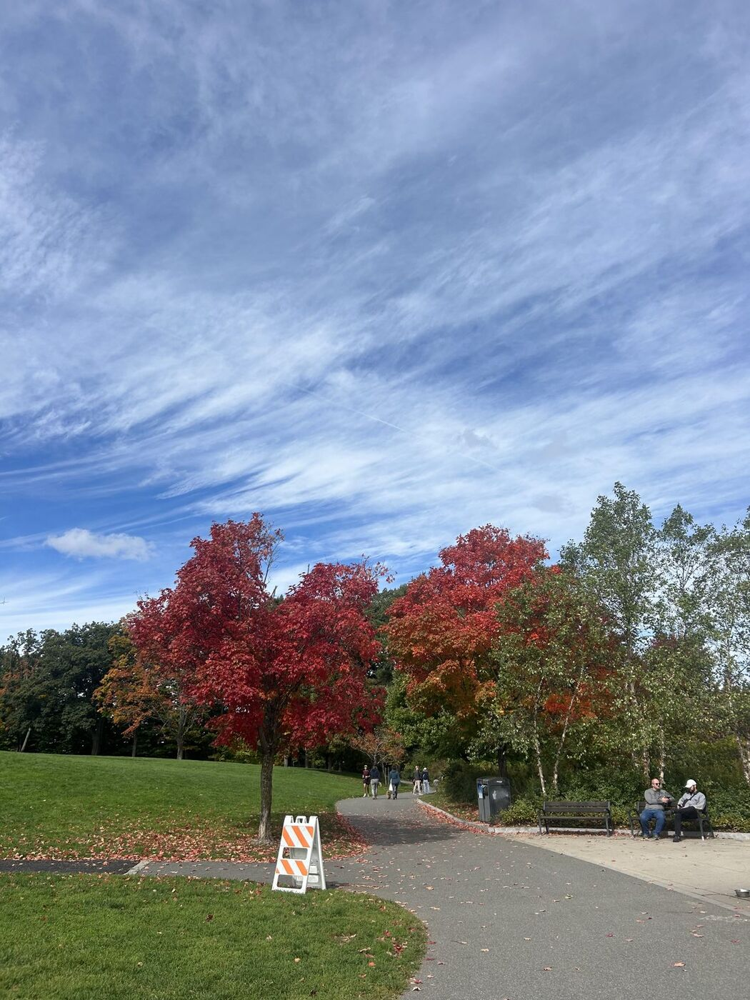

Learning by doing, one community at a time.
Start where we belong. Learn. Then take it into the world.
Three pilots, each building on the last.
We start with communities we are part of, learn how to hold these conversations well, and then take the method into the real world.
- In progress · Fall 2026
Harvard Kennedy School: Bridging Forward
Alida Monaco and Mia Lei have worked with the Bipartisan Caucus at Harvard Kennedy School to create a small-group discussion series called “Bridging Forward.” Its mission is not explicitly climate-focused, but it embodies the same principles: a relational space where students can discuss real-world issues in a high-trust environment.
Polarization, cancel culture, and tribalism can create a low-trust environment where people fear raising important topics. The program recruits and trains student facilitators in the first half of the semester, then deploys them to moderate discussions across beliefs in the second half.
- Scheduled · Spring 2027
MIT Sloan pilot
A 10-week facilitated dialogue including students, faculty, and administrators on an environmental issue that matters to the MIT Sloan community, with a bias toward action. Details below.
- Tentative · Summer 2027
Real-world pilot: solar in Illinois
Bringing the pedagogy to a real community with a live wedge issue. Our first candidate is solar proliferation in Southern Illinois, described below.
Also this fall: gather feedback on Conversations for Change and assemble a board of advisors. Spring 2027: prepare the real-world launch.
Community conversations on a local environmental issue.
Our pilot focuses on a community we are part of. We will facilitate discussions among students, administrators, and other MIT Sloan stakeholders on an environmental issue important to the community. Whatever people’s views on how to act, the discussions help the community understand the values behind each person’s opinion and create a collaborative space for enduring change.
Where & when
MIT Sloan, in an evening session, 6–7:30 p.m., weekly for 10 weeks.
Who
20–24 MIT Sloan students, professors, and administrators, split into two groups of 10–12.
What
Conversations on an environmental issue MIT Sloan cares about, designed to lead to real impact in the community.
Recruit, plan, and train
In the 1–2 months before the pilot, the team recruits facilitators and participants, outlines each week in detail, books logistics (space, food, accommodations), and trains facilitators.
Building consensus and surfacing values
Getting to know each other, surfacing differences in opinion, and exploring the values or life experiences behind them. The goal is for people who disagree to move past that together to make progress in the community.
Creating an action plan
Shifting from underlying beliefs and desired change to areas of potential impact. The deliverable moves from a theory of change to an action plan the group can feasibly control.
Implementing and reflecting on change
The group project-manages itself and starts implementing its plan, reflects on personal choices, considers how to engage others in these conversations, and solves roadblocks.
Why: by providing a “container” for productive but vulnerable conversations on environmental issues, communities not only create an action plan together, they understand each other better and change their own cultural environment.
Week-by-week structure
| Week | Focus | Deliverables |
|---|---|---|
| 0 | Pre-work (1–2 months before) Recruit facilitators and participants; outline each week; book space and food; build and deliver facilitator training. | Two additional facilitators on board; marketing materials sent; 20–24 participants confirmed; full-semester workplan; space secured for 10 weeks; training manual created and facilitators trained. |
| 1 | Intros and opinions Participants meet and share where they stand. | Facilitators map people’s opinions and potential areas of alignment. |
| 2 | Deepen opinions to values Moving from positions to the values and life experiences beneath them. | Facilitators identify values that could lead to tactical changes. |
| 3 | Values to a theory of change The group drafts its own theory of change. | First draft within the meeting; circulated afterward for feedback. |
| 4 | Theory of change finalized Finalize the shared theory of change. | A finalized version to begin the next phase from. |
| 5 | Brainstorm actions; score feasibility Generate action ideas and score how feasible each is. | Brainstormed list circulated after the session. |
| 6 | Narrow down; create the plan Choose what the group can realistically control. | A narrowed list of 1–3 ideas, and where the group’s resources can be leveraged. |
| 7 | First check-in and problem solving Participants project-manage themselves. | Project-management document submitted before the meeting: finished actions, to-dos, roadblocks. |
| 8 | Second check-in and problem solving Continue implementing and solving roadblocks. | Updated project-management document before the meeting. |
| 9 | Third check-in and problem solving Continue implementing and solving roadblocks. | Updated project-management document before the meeting. |
| 10 | Final check-in and reflection Reflect on personal choices and how to engage others. | Next steps and future action planning; post-survey to participants and facilitators. |
Facilitator objectives and training program: in development, informed by the Bridging Forward pilot and our facilitation partners. Check back for details, or get in touch if you’d like to help shape it.
Solar in Illinois.
Several Southern and regional Illinois counties, such as Massac County, continue to reject commercial solar farm permits, despite a state law that orders local boards to approve projects meeting uniform standards.
- The economics work. Illinois offers strong incentives, including Illinois Solar for All and Illinois Shines, and high solar land-lease payments can make solar more financially attractive to farmers than traditional farming.
- Yet permits are still denied. Many local jurisdictions continue to reject them despite the financial case.
- We don’t yet know why. That is exactly what we intend to find out, in a real way, in conversation with the people involved.
Sources: Illinois Power Agency (Illinois Solar for All, Illinois Shines); Inside Climate News; NPR Illinois.

Help us build the first containers
We are looking for facilitators, participants, community partners, and advisors who believe understanding has to come before agreement.